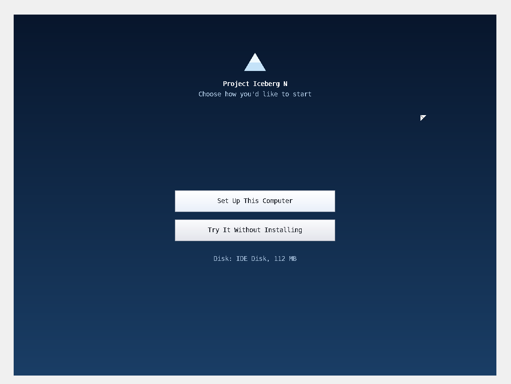
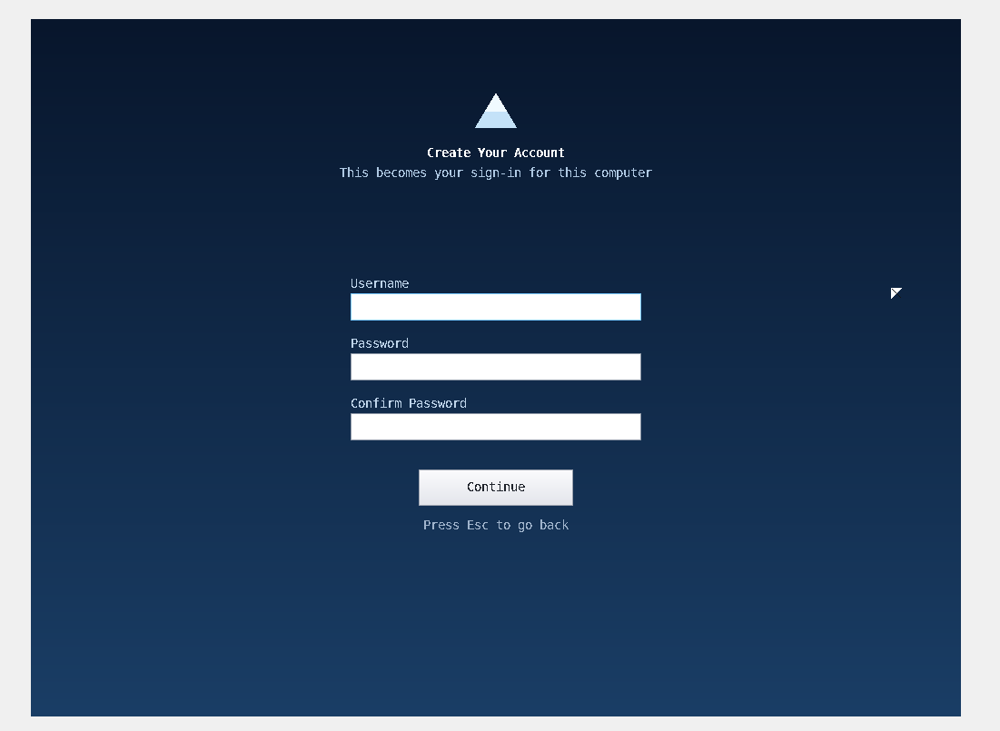
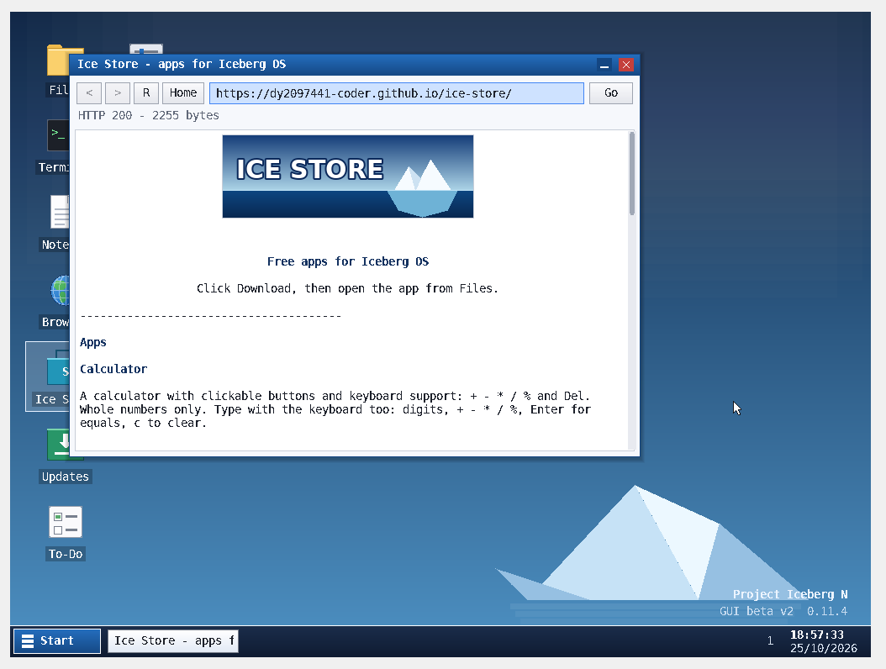

Project Iceberg OS
Project Iceberg OS🖥️
Desktop & apps
Windows, desktop icons and a Start menu, with Files, Terminal, Notepad, Settings, About and To-Do. Includes copy, cut, paste and startup sound.
Meet Project Iceberg OS: a hobby operating system built from scratch, with a graphical desktop, its own web browser, an app store and a built-in update system.
Built from scratch · Tested in VirtualBox · x86 / BIOS
 PROJECT ICEBERG N · GUI BETA
PROJECT ICEBERG N · GUI BETAA compact operating system with a desktop experience, useful built-in tools and networking features.
Windows, desktop icons and a Start menu, with Files, Terminal, Notepad, Settings, About and To-Do. Includes copy, cut, paste and startup sound.
Loads real websites over direct HTTPS, tries HTTPS before HTTP for typed names, and can preview your own saved HTML pages.
Its own TCP engine with ARP replies, a TLS 1.3 client written from scratch, and certificate checking with Mozilla root certificates.
Set up Iceberg on a disk and keep Home files between boots, or try it without installing.
A collection of free apps made for Iceberg OS. Download small .app files into Home/Downloads and open them from Files. Includes Calculator, Colors and Test apps.
The Updates app checks the update site, downloads .upt files and asks you to restart when an update is ready.
Click any screenshot to view it larger.



Iceberg is designed to run on modest x86 hardware or a virtual machine.
Tested in VirtualBox. Real hardware has not yet been tested, so treat physical-PC use as experimental.
Follow these steps to boot the system in a virtual machine.
Download the ISO from the GitHub releases page.
Create a VM with at least 64 MB RAM and a 64 MB or larger IDE or SATA disk.
For startup sound, set Settings → Audio to the ICH AC97 controller.
Attach the ISO to the virtual optical drive and start the VM.
Choose Set Up This Computer to install, or Try It Without Installing.
After installation, remove the ISO or put the hard disk first in the boot order.
Need more detail? See INSTALL.md in the project repository.
Report bugs, share screenshots, publish your own Ice Store apps and hear about updates. When reporting a bug, include your VirtualBox settings and Terminal output for disk, sound or net.